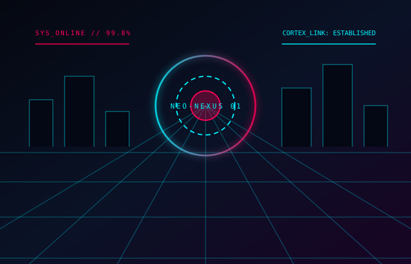
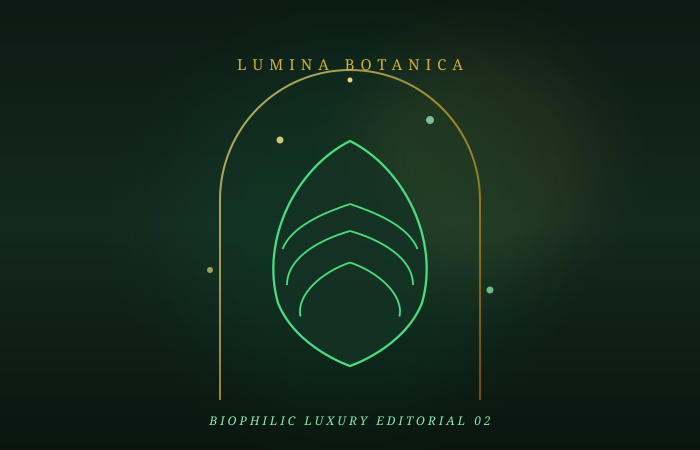
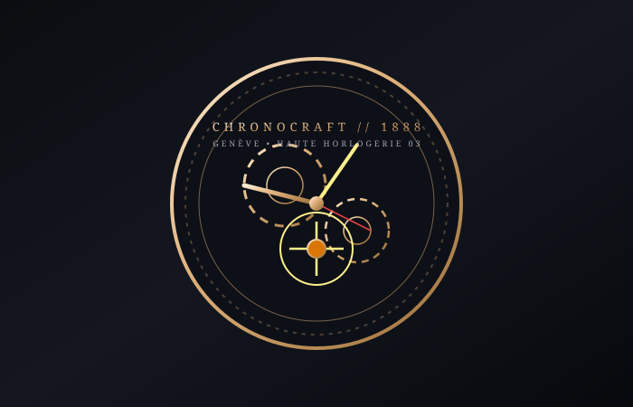
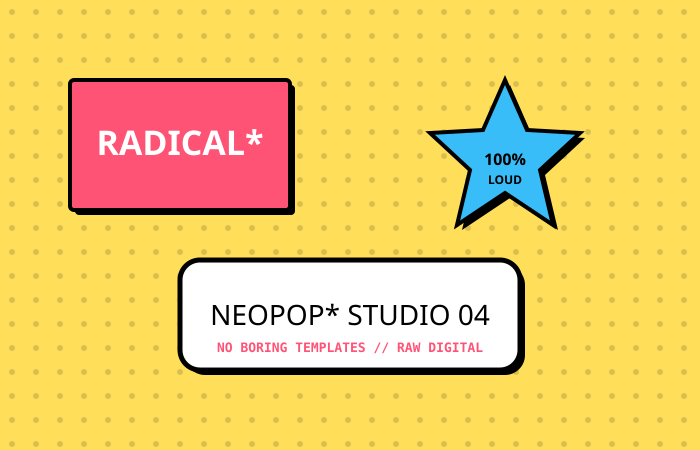
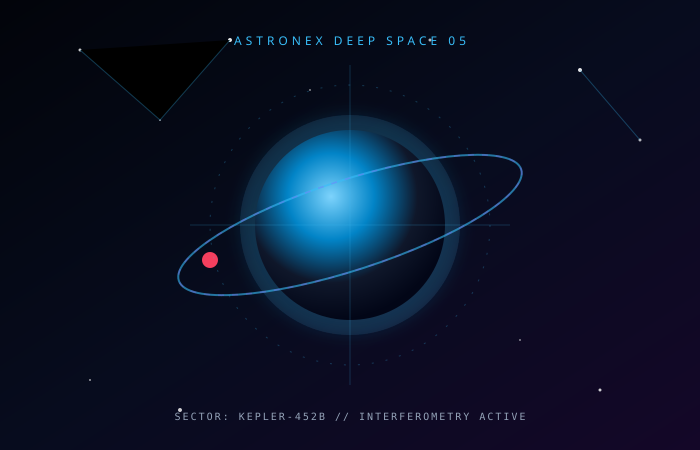
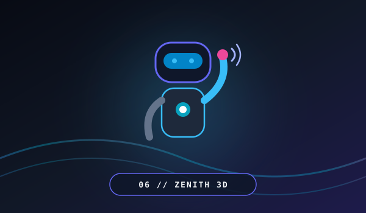

01 // CYBERPUNK01. Neo-Nexus HUD
Тактический киберпанк-интерфейс с 3D-варпом пространства, терминалом и синтезом звуков.
Интерактивный хаб всех моих разработок: от распределенных бэкендов на FastAPI и Django, ИИ-ассистентов с RAG-поиском и реалтайм WebSockets до нативного C# десктопа и 6 креативных веб-миров на чистом Canvas 2D/3D.

01 // CYBERPUNKТактический киберпанк-интерфейс с 3D-варпом пространства, терминалом и синтезом звуков.

02 // BOTANICALПремиальный ботанический салон: процедурные золотые споры, стеклянные карточки и релакс-аудио.

03 // HOROLOGYВысокое часовое искусство: симуляция зубчатых передач, турбийон на Canvas и хронограф.

04 // BRUTALISMНеобрутализм и поп-арт: физика стикеров, пружинящие кнопки и взрывной интерактив.

05 // DEEP SPACEКосмическая обсерватория: 3D-планетарий, варп-скорость звездного поля и телеметрия.

06 // 3D TILDA & FAREWELLTilda Zero-Block эстетика: живой 3D-персонаж, который машет рукой на прощание при скролле, и калькулятор сметы.
Попробуйте изменить поисковый запрос или выбрать другую категорию в фильтре.